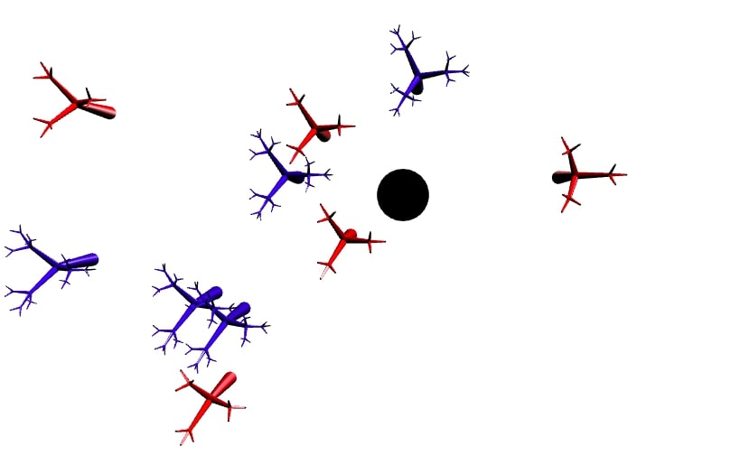
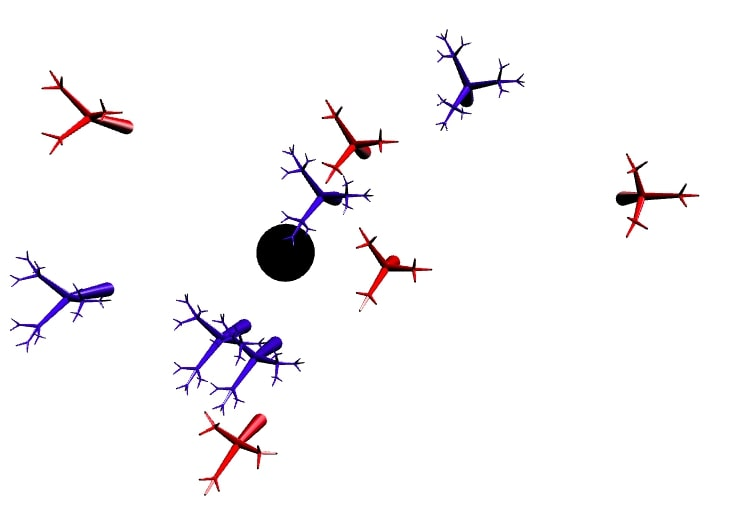

Celine Seghbossian
Login: cseghbos@ucsc.edu
CSE 160 -- Program #3
Sunday, November 10, 2019
List of Files:
/prog3/
prog3.js
driver.html
features.html (this file)
output1.jpg
output2.jpg
This program implements the functionality as specified by Program #3 specifications. There are bugs as described below.
-
Object vs world coordinates.
Each object is defined in its own coordinate system.
This is referred to as the object coordinate.
Objects are placed in the world coordinate system via a series
of transformations.
In our case, it's where you clicked on the canvas to plant the tree in the first place.
When an object is first created,
you need to keep track of its extents in its object coordinate system.
The extent refers to the range of x,y,z values when the object
is centered at the origin.
The object center is simply the average of all the object vertices.
Any transformations on an object is relative to this configuration.
Assume your world is contained within a 1001 x 1001 x 1001 cube.
Set your world coordinate system so that the origin
is at the center of a (500, 500, 0).
-
Picking a tree for transformation.
Picking is done by left clicking on an tree.
You can pick on any tree that's currently visible.
You indicate that a tree has been picked by changing its color to green.
You deselect an object by left clicking on the background.
(To distinguish this action from creating a new tree,
deselection happens only when there's a tree that's been picked.
Also, only one tree can be picked at any time).
Doing so will revert the color of the picked object back to its original color.
Only one object can be picked at any time.
If you click on another object while you currently have a picked object,
nothing happens.
If you want to pick a different tree, you'll have to deselect the current tree first. An example code for this functionality is given here in this
link.
-
Scaling.
Scaling is applied to the picked object.
If there's no picked object, then the following is a no-op.
Scaling is achieved by turning the scroll wheel (find a mouse with a scroll
wheel if you're using your laptop to do development).
Scrolling up will increase the object, while scrolling down will decrease the object.
Scaling is done uniformly on x,y,z dimensions.
Scaling is specified with respect to the object coordinate system.
Any single scaling operation can be up to 0.5 to 2 times its previous size.
Scaling is cumulative.
-
Translation.
Translation is applied to the picked object.
If there's no picked object, then the following is a no-op.
Translation is specified with respect to the world coordinate system.
2D movements on the image plane is specified by
using the left button in conjunction with mouse movement.
The displacement between a left mouse down event and the left mouse up event indicates
the amount of movement to be applied to the picked object.
To specify a movement in the world z direction,
the vertical displacement between the middle mouse down event and the middle mouse up
event is used.
-
Rotation.
Rotation is applied to the picked object.
If there's no picked object, then the following is a no-op.
Rotation is specified with respect to the object coordinate system.
The user indicates rotation by using the right button in conjunction with
the mouse movement.
A right mouse down with horizontal motion (displacement in x is much larger
than displacement in y) until a mouse up event
indicates a rotation about the z-axis of the object which should also align with the world z-axis
(but not of the screen, you'll see why in Prog 4).
A right mouse down with a vertical motion until a mouse up event
indicates a rotation about the x-axis of the object.
This might be useful to model trees growing at an angle.
You are not required to do a rotation about the object's y-axis.
A potential source of confusion is the use of different coordinate systems.
Transformations are carried out with respect to a coordinate system.
Pay attention to the required coordinate system for the different transformations above.
-
Cumulative transformations?
Successive transformations on an object is always relative to the object's
most recent configuration.
For example, if I translate an tree then I scale it,
the scaling will change the size of the tree in-place
and not relative to the origin.
That is, the scaled tree will still be at the translated position,
but scaled to the new size.
Likewise, if I apply a rotation to the tree as my next transformation,
the rotation is applied relative to the tree's axes at its current location in
the world coordinate system.
A typical way of handling this is to store the cumulative transformations
to an tree in a matrix.
Apply the inverse of this matrix before applying the latest transformation.
And update the cumulative matrix with the latest transformation.
Each object will have its own cumulative transformation matrix.
-
BUGS
- Perspective view is not perfect and clips some trees.
- Although the cumulative matrix were multiplied by its inverse before adding another transformation, some of the behavior is erratic.
This is seen in the z-rotations and scaling, neither of which happen in place.
For more information on implementation, please reference function descriptions in prog3.js
Link for grader:
driver.html

